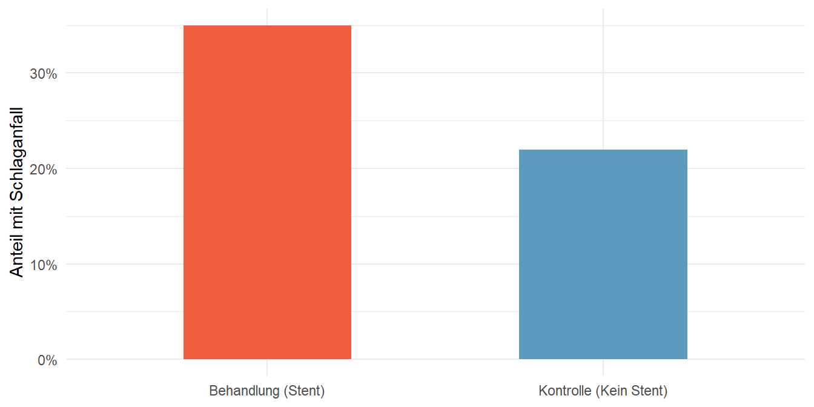

Methodenauswahl: Für ein gegebenes Datenproblem zielsicher entscheiden, welches Inferenzverfahren (Ein-/Zwei-Stichproben-Anteile, unabhängige oder gepaarte Mittelwerte) mathematisch korrekt ist.
Voraussetzungsprüfung (Diagnostik): Die technischen Bedingungen (Unabhängigkeit, Erfolgs-Misserfolgs-Bedingung, Normalität/Ausreißer) für das jeweilige Verfahren anhand der Daten überprüfen, bevor Software eingesetzt wird.
Software-Kompetenz: Die R-Funktionen prop.test() und t.test() korrekt parametrisieren und deren Output (p-Wert, Konfidenzintervall) im praktischen Kontext präzise interpretieren.
Dieses Kapitel bezieht sich auf Kapitel 16 und 17 aus dem Lehrbuch “Introduction to modern statistics” (Çetinkaya-Rundel und Hardin 2024).
Während wir im vorangegangenen Kapitel den theoretischen Kern der statistischen Inferenz kennengelernt haben, geht es nun um die operative Anwendung in R.
2.1 Das universelle Prinzip: Die Anatomie der Teststatistik
Egal ob wir Anteile oder Mittelwerte, eine Gruppe oder zwei Gruppen testen – die Inferenz folgt unter der Haube immer der exakt gleichen konzeptionellen Logik. Wir berechnen eine Teststatistik (wie \(Z\) oder \(T\)), die uns sagt, wie ungewöhnlich unsere Daten unter der Nullhypothese sind.
Diese Statistik ist immer ein Verhältnis aus Signal und Rauschen:
Das Signal (Zähler): Wie stark weicht das, was wir in unseren Daten gemessen haben, von dem ab, was die Nullhypothese behauptet?
Das Rauschen (Nenner): Wie viel zufällige Schwankung (Standardfehler) erwarten wir allein durch das Ziehen von Stichproben? Denken Sie daran: Da\(n\) in der Berechnung des SE stets im Nenner steht, sinkt das Rauschen bei größeren Stichproben massiv.
Je größer unser Signal im Verhältnis zum Rauschen ist, desto extremer wird unsere Teststatistik und desto kleiner wird der resultierende p-Wert. Anstatt diese Standardfehler ab jetzt manuell zu berechnen, überlassen wir die Bruchrechnung R und konzentrieren uns auf das, was Software nicht kann: Die Prüfung der Voraussetzungen und die Interpretation.
2.2 Inferenz für Anteile (Proportionen)
Wir konzentrieren uns zunächst auf kategoriale Daten (Erfolg vs. Misserfolg).
2.2.1 Voraussetzungen für Proportionen
Damit die Inferenz (die auf der Normalverteilung basiert) gültig ist, müssen R-Outputs nur interpretiert werden, wenn zwei harte Bedingungen erfüllt sind: 1. Unabhängigkeit: Die Beobachtungen stammen aus einer Zufallsstichprobe oder einem randomisierten Experiment. 2. Erfolgs-Misserfolgs-Bedingung: Die Stichprobe ist groß genug. Wir erwarten mindestens 10 Erfolge und 10 Misserfolge. (Beim Testen zweier Gruppen gilt dies für beide Gruppen separat).
2.2.2 Operative Umsetzung in R (prop.test)
2.2.2.1 Ein einzelner Anteil (\(p\))
Angenommen, eine Umfrage unter 826 Kreditnehmern ergab, dass 578 (ca. 70 %) neue Vorschriften befürworten. Wir wollen testen, ob die Mehrheit (\(p > 0.5\)) zustimmt.
Code
# Teste, ob der Anteil signifikant von 0.5 abweichtprop.test(x =578, n =826, p =0.5, conf.level =0.95)
1-sample proportions test with continuity correction
data: 578 out of 826, null probability 0.5
X-squared = 131.04, df = 1, p-value < 2.2e-16
alternative hypothesis: true p is not equal to 0.5
95 percent confidence interval:
0.6670131 0.7306175
sample estimates:
p
0.6997579
R liefert uns direkt den p-Wert und das 95%-Konfidenzintervall. Ist der p-Wert klein (\(< 0,05\)), verwerfen wir die Nullhypothese.
2.2.2.2 Vergleich zweier Anteile (\(p_1 - p_2\))
TippVisuelle Intuition vs. Statistischer Test

Täuschend ähnlich: Reicht der sichtbare Unterschied aus, um systematisch zu sein?
Was sagt uns das Auge? Die Balken (35 % vs. 22 %) sehen im Diagramm unterschiedlich aus. Die Intuition flüstert uns einen klaren Effekt zu. Ob dieser Unterschied jedoch ausreicht, um bei kleinen Fallzahlen (\(n=40\) und \(n=50\)) nicht nur Zufall zu sein, klärt erst der Hypothesentest.
In einem medizinischen Experiment (Stents) vergleichen wir eine Behandlungsgruppe mit einer Kontrollgruppe. Wir übergeben R einfach die Vektoren der “Erfolge” und der Gruppengrößen:
Code
# x: Vektor der Erfolge (z.B. Überlebende)# n: Vektor der Gruppengrößenprop.test(x =c(14, 11), n =c(40, 50), conf.level =0.90)
2-sample test for equality of proportions with continuity correction
data: c(14, 11) out of c(40, 50)
X-squared = 1.2801, df = 1, p-value = 0.2579
alternative hypothesis: two.sided
90 percent confidence interval:
-0.04957706 0.30957706
sample estimates:
prop 1 prop 2
0.35 0.22
Interpretation: Wenn das von R ausgegebene Konfidenzintervall für die Differenz die Null einschließt, haben wir keine ausreichende Evidenz für einen Unterschied zwischen den Gruppen. R verwendet hier intern automatisch den “gepoolten Anteil”, um das Rauschen unter der Nullhypothese korrekt abzuschätzen.
2.3 Inferenz für Mittelwerte
Wir wechseln von kategorialen zu numerischen Daten. Die entscheidende Änderung: Wenn wir Mittelwerte (\(\mu\)) analysieren, müssen wir die wahre Standardabweichung der Grundgesamtheit durch die Standardabweichung der Stichprobe (\(s\)) schätzen. Diese zusätzliche Unsicherheit zwingt uns, das Normalmodell zu verlassen und zur t-Verteilung zu wechseln.
2.3.1 Bedingungen für Mittelwerte (Das “LUNG”-Konzept)
R warnt Sie nicht, wenn Sie ungeeignete Daten in einen t-Test werfen. Sie müssen vorab prüfen:
Unabhängigkeit: Zufällige Ziehung / Zuweisung.
Normalität / Ausreißer:
Kleines\(n\) (\(< 30\)): Daten dürfen keine eindeutigen Ausreißer oder extreme Schiefe haben (Histogramm prüfen!).
Großes\(n\) (\(\ge 30\)): Durch den Zentralen Grenzwertsatz ist leichte Schiefe tolerierbar, es dürfen aber keine extremen Ausreißer existieren.
2.3.2 Operative Umsetzung in R (t.test)
R erledigt die Berechnung der t-Statistik und der korrekten Freiheitsgrade (\(df\)) automatisch für uns.
2.3.2.1 Ein einzelner Mittelwert (\(\mu\))
Wir wollen testen, ob die durchschnittliche Laufzeit bei einem Rennen signifikant vom historischen Nullwert (93,29 Minuten) abweicht:
Code
t.test(run17_sample_100$time, mu =93.29, conf.level =0.95)
One Sample t-test
data: run17_sample_100$time
t = 2.8478, df = 99, p-value = 0.005354
alternative hypothesis: true mean is not equal to 93.29
95 percent confidence interval:
94.83295 101.92338
sample estimates:
mean of x
98.37817
Wie Sie diesen Output lesen:
sample estimates (mean of x): Unsere Stichprobe von 100 Läufern brauchte im Durchschnitt knapp 98,38 Minuten.
p-value = 0.005354: Dieser Wert ist deutlich kleiner als das Signifikanzniveau von 0,05. Wir verwerfen die Nullhypothese. Die durchschnittliche Laufzeit weicht statistisch signifikant vom historischen Wert (93,29 Minuten) ab.
95 percent confidence interval: Die wahre durchschnittliche Laufzeit aller Teilnehmer liegt mit 95%iger Sicherheit zwischen ca. 94,83 und 101,92 Minuten. Da der historische Wert (93,29) nicht in diesem Intervall liegt, bestätigt dies unser signifikantes Testergebnis.
Die roten Punkte markieren die Mittelwerte. Das Signal muss sich gegen das Rauschen (Überschneidung der Boxen) durchsetzen.
Was sagt uns das Auge? Die Boxen überschneiden sich fast vollständig (massives Rauschen), die Mittelwerte (rote Punkte) scheinen sehr nah beieinander zu liegen. Die Intuition vermutet hier eher keinen Unterschied. Weil wir aber eine große Stichprobe (\(n=1000\)) haben, ist das tatsächliche statistische Rauschen (der Standardfehler) winzig. Der folgende t-Test wird zeigen, wie stark uns das Auge hier täuscht.
Wir vergleichen das Geburtsgewicht von Babys bei rauchenden (smoker) vs. nicht-rauchenden (nonsmoker) Müttern. Die Mütter sind voneinander unabhängig.
Code
# Die Tilde (~) bedeutet: "Modelliere Gewicht in Abhängigkeit von Rauchgewohnheit"t.test(weight ~ habit, data = births14)
Welch Two Sample t-test
data: weight by habit
t = 3.8166, df = 131.31, p-value = 0.0002075
alternative hypothesis: true difference in means between group nonsmoker and group smoker is not equal to 0
95 percent confidence interval:
0.2854852 0.8998751
sample estimates:
mean in group nonsmoker mean in group smoker
7.269873 6.677193
Wie Sie diesen Output lesen:
Welch Two Sample t-test: R verwendet standardmäßig den Welch-t-Test. Dieser ist robust, falls die Varianzen (Streuungen) in beiden Gruppen unterschiedlich groß sind.
sample estimates: Babys von Nichtraucherinnen wogen in dieser Stichprobe im Schnitt 7,27 Pfund, die von Raucherinnen 6,68 Pfund.
p-value = 0.0002075: Ein extrem kleiner Wert (\(< 0,05\)). Der Unterschied im Geburtsgewicht ist statistisch hochsignifikant und kann sehr unwahrscheinlich durch bloßen Zufall beim Ziehen der Stichprobe erklärt werden.
95 percent confidence interval: Babys von Nichtraucherinnen sind im Durchschnitt zwischen ca. 0,29 und 0,90 Pfund schwerer. Das Intervall schließt die Null nicht ein, was unsere Entscheidung, die Nullhypothese zu verwerfen, bestätigt.
Sind die Datenstrukturen abhängig (z.B. Buchpreise in der UCLA-Buchhandlung vs. Amazon für exakt dasselbe Buch), verdeckt die enorme Preisvarianz zwischen unterschiedlichen Büchern den eigentlichen Preisunterschied zwischen den Händlern. Ein unabhängiger Test ist hier mathematisch falsch.
Wir müssen R mitteilen, dass die Daten gepaart sind (paired = TRUE). R berechnet dann intern die Differenz für jedes Paar und führt einen Ein-Stichproben-Test auf diese Preisdifferenzen durch.
Paired t-test
data: ucla_textbooks_f18$bookstore_new and ucla_textbooks_f18$amazon_new
t = 2.2012, df = 67, p-value = 0.03117
alternative hypothesis: true mean difference is not equal to 0
95 percent confidence interval:
0.3340641 6.8324064
sample estimates:
mean difference
3.583235
Wie Sie diesen Output lesen:
mean difference: Im Durchschnitt waren die Bücher in der UCLA-Buchhandlung in dieser Stichprobe um 3,58 Dollar teurer als exakt dieselben Bücher bei Amazon.
p-value = 0.03117: Da dieser Wert kleiner als 0,05 ist, ist der Preisunterschied statistisch signifikant. Wir verwerfen die Nullhypothese, dass es im Schnitt keinen Preisunterschied gibt.
95 percent confidence interval: Die wahre, durchschnittliche Preisdifferenz für alle Lehrbücher liegt mit 95%iger Sicherheit zwischen 0,33 und 6,83 Dollar. Da das gesamte Intervall im positiven Bereich liegt (größer als 0), können wir sehr sicher sein, dass die UCLA-Buchhandlung systematisch teurer ist.
HinweisExkurs aus der Praxis: Sie können jetzt A/B-Testing!
Wenn Sie die statistischen Tests für zwei Anteile (prop.test) oder zwei Mittelwerte (t.test) verstanden haben, beherrschen Sie bereits eines der wichtigsten Werkzeuge der modernen Wirtschaft: das A/B-Testing.
Technologieunternehmen, E-Commerce-Plattformen und Marketing-Agenturen nutzen diese Tests täglich, um datengetriebene Entscheidungen zu treffen:
Beispiel Anteile (Conversion Rate): Führt ein roter “Jetzt Kaufen”-Button (Variante B) zu einer signifikant höheren Klickrate als der bisherige blaue Button (Variante A)? Das ist unter der Haube exakt unser prop.test.
Beispiel Mittelwerte (User Engagement): Verbringen Nutzer mit dem neuen Empfehlungs-Algorithmus (Variante B) signifikant mehr Minuten auf der Plattform als mit dem alten (Variante A)? Das berechnet exakt unser t.test.
Die Mathematik bleibt identisch zu den Beispielen in diesem Kapitel. Lediglich das Vokabular ändert sich: Was wir “Stichprobe 1 und 2” nennen, heißt in der Industrie oft “Control Group” (A) und “Treatment Group” (B). Die statistische Inferenz ist das absolute Fundament, um Signale im Business-Kontext vom bloßen Zufallsrauschen zu trennen.
2.4 Zusammenfassung der Entscheidungsstrukturen
Um das richtige Werkzeug auszuwählen, stellen Sie sich immer diese drei Fragen, bevor Sie Code schreiben: